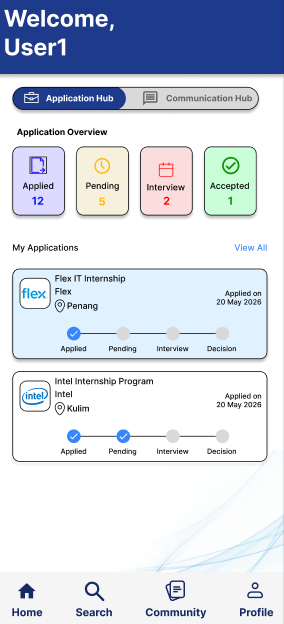

Understanding Different Perspectives
One challenge I faced was learning to consider viewpoints other than my own. ICT500 taught me that effective decisions come from evaluating different perspectives before reaching a conclusion.
UNIVERSITI TEKNOLOGI MARA
ICT500 Self Reflection Portfolio
Reflecting on how Critical Thinking and Creative Thinking have shaped my learning journey, strengthened my problem-solving abilities, and prepared me for future professional challenges.

Welcome to my ICT500 Self Reflection Portfolio. This website is more than a collection of coursework. It represents my personal journey throughout ICT500, where I explored the importance of Critical Thinking and Creative Thinking in both academic and real-life situations.
Throughout this course, I gradually realised that learning is not simply about obtaining the correct answer. Instead, it is about understanding the problem, analysing different perspectives, making thoughtful decisions, and constantly reflecting on how each experience contributes to personal growth.
Every challenge, discussion, presentation, and project encouraged me to become a better learner. This portfolio reflects not only what I have learned, but also how those lessons continue to influence the way I think today.
Talent without hard work is nothing.— Cristiano Ronaldo
ICT500 introduced me to two important ways of thinking that have changed how I approach challenges, communicate with others, and solve problems. Rather than memorising theories, I learned how these concepts can be applied to everyday situations, academic work, and future professional experiences.
Before studying ICT500, I often focused on reaching a solution as quickly as possible. However, this course taught me that effective problem solving begins with understanding the situation, questioning assumptions, gathering evidence, and evaluating different viewpoints before making decisions.
One of the biggest lessons I learned was that asking meaningful questions is often more valuable than immediately searching for answers. This mindset has helped me become more confident, analytical, and objective when facing academic challenges.
ICT500 also encouraged me to think beyond conventional solutions. I realised that creativity is not limited to artistic ability but is equally important in solving problems, generating new ideas, and improving existing solutions.
Throughout the semester, I became more willing to explore different possibilities before deciding on the best approach. Instead of rejecting ideas too quickly, I learned to appreciate brainstorming, experimentation, and viewing challenges from different perspectives.
This experience has made me more adaptable and open-minded. I now believe that combining critical analysis with creative thinking leads to stronger decisions and more meaningful solutions.

One of the most meaningful opportunities to apply what I learned in ICT500 was through the Smart Intern project. Although the project involved teamwork, this section reflects on my own learning and contribution rather than the group's overall achievements.
Critical Thinking helped me analyse user needs before proposing solutions, while Creative Thinking encouraged me to explore alternative ideas and improve the overall user experience.
This project reminded me that successful solutions are rarely created on the first attempt. They improve through observation, discussion, testing, reflection, and continuous refinement.
Pressure is a privilege.— Max Verstappen
One challenge I faced was learning to consider viewpoints other than my own. ICT500 taught me that effective decisions come from evaluating different perspectives before reaching a conclusion.
Instead of rushing towards a solution, I learned to slow down, identify the actual problem, analyse available information, and make decisions based on evidence rather than assumptions.
Creative thinking encouraged me to value every idea during discussions. Even ideas that were not selected often inspired better solutions later in the process.
ICT500 has inspired me to continue improving both academically and professionally. These goals represent the direction I want to pursue after completing this course.
Continue analysing problems logically and making informed decisions before reaching conclusions.
Develop innovative ideas and design user-focused digital solutions through continuous learning.
Apply the knowledge gained from ICT500 throughout my internship and future career in the technology industry.
Although this portfolio reflects my individual growth, my learning experience was strengthened through collaboration, discussions, presentations, and teamwork with my classmates.
Working together on assignments taught me how to communicate ideas clearly, divide responsibilities fairly, and support one another towards a common goal.
Classroom discussions introduced different viewpoints that challenged my assumptions and encouraged deeper critical thinking before making decisions.
Learning alongside my peers motivated me to continuously improve, exchange knowledge, and become more confident in solving real-world problems.
Although this portfolio focuses on my individual reflection, working together with my group provided valuable learning experiences. Every member contributed different perspectives, allowing us to discuss ideas openly and make better decisions together.
Throughout our project, I realised that effective collaboration is not simply about dividing tasks. It involves listening carefully, respecting different opinions, communicating clearly, and supporting one another to achieve a shared objective.
This experience strengthened my appreciation for teamwork and showed me that combining diverse ideas often produces stronger solutions than working individually.
Looking back on my ICT500 journey, I can confidently say that this course has transformed the way I approach learning. Critical Thinking taught me to analyse situations carefully before making decisions, while Creative Thinking encouraged me to remain curious, adaptable, and willing to explore different possibilities.
Beyond academic knowledge, ICT500 has helped me become a more reflective learner. Every discussion, challenge, presentation, and project became an opportunity to improve not only my skills but also my mindset. These experiences will continue to guide me throughout my studies and future career.